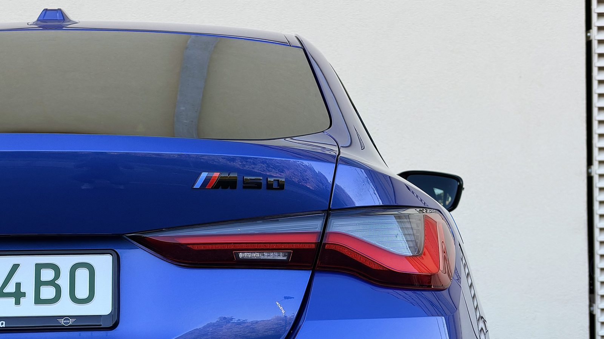
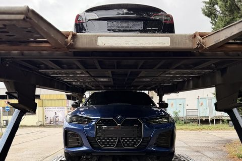

Čo musíte mať z krajiny pôvodu
Skôr než auto opustí predajcu, skontrolujte, či máte tieto doklady:
- osvedčenie o evidencii z krajiny pôvodu, pri autách z Nemecka obe časti (Zulassungsbescheinigung Teil I a Teil II),
- doklad o nadobudnutí: faktúra alebo kúpna zmluva,
- doklad o vyradení z evidencie v krajine pôvodu, ak ho tamojší systém vydáva,
- COC list (európske vyhlásenie o zhode), ak ho máte. Nie je vždy povinný, ale urýchli schválenie či uľahčí zápis dodatočných údajov do slovenského osvedčenia o evidencii,
- doklad o platnej technickej kontrole zo zahraničia, ak ju auto má.
Skontrolujte, či VIN na aute sedí s osvedčením o evidencii aj s faktúrou. Preklep v jednom znaku znamená problém pri kontrole originality.
Pozor na odhlásenie v krajine pôvodu
Pri kúpe na vlastnú päsť si postrážte, aby bolo auto v krajine pôvodu riadne odhlásené, alebo aby ste dostali doklady, s ktorými ho odhlásite. Inak ho na Slovensku neprihlásite a na pôvodného majiteľa môžu ďalej chodiť pokuty a mýto.
- Nemecko: auto odhlasuje predávajúci na úrade (Zulassungsstelle) ešte pred predajom do zahraničia. Na prevoz po vlastnej osi sa po odhlásení vybavujú vývozné značky (Ausfuhrkennzeichen), na ktoré auto potrebuje platnú technickú kontrolu a poistenie.
- Taliansko: od roku 2020 sa auto musí pred vývozom odhlásiť na vývoz (radiazione per esportazione). Po odhlásení už nesmie jazdiť na talianskych značkách.
- Ostatné krajiny majú vlastné postupy a niektoré auto pri predaji vôbec neodhlasujú. Pred zaplatením si overte, aký doklad o vyradení z evidencie dostanete.
Postup na Slovensku
Preklady dokladov.
Doklad o kúpe potrebujete v úradnom preklade do slovenčiny, zväčša aj osvedčenie o evidencii alebo doklad o vyradení z evidencie. Doklady v češtine sa neprekladajú.
Kontrola originality.
Na pracovisku kontroly originality overia, či auto a doklady patria k sebe. Dostanete odborný posudok, ktorý platí 15 dní. Do tohto termínu musíte stihnúť ďalšie kroky, preto ho nerobte zbytočne skoro.
Technická kontrola.
Ak je auto staršie ako štyri roky a nemá platnú kontrolu zo zahraničia s úradným prekladom, absolvuje technickú kontrolu na Slovensku. Spaľovacie auto aj emisnú kontrolu. Elektromobil emisnú kontrolu nerobí.
Recyklačný príspevok.
Zaplatíte ho cez portál idovoz.sk.
Potvrdenie daňového úradu pri novom aute.
Týka sa len auta do šiestich mesiacov od prvej registrácie alebo do 6 000 km. Súkromná osoba podá daňové priznanie a zaplatí DPH do siedmich dní od kúpy. Platiteľ DPH predkladá potvrdenie o oznámení nadobudnutia. Pri ojazdenom aute tento krok odpadá.
Schválenie na okresnom úrade.
Na odbore cestnej dopravy požiadate o schválenie jednotlivo dovezeného vozidla. Doložíte doklad o kúpe, osvedčenie o evidencii, posudok z kontroly originality, protokol z technickej kontroly a potvrdenie o recyklačnom príspevku. Štandardne to trvá do 30 dní za poplatok 100 €. Zrýchlené konanie do 5 dní stojí okolo 300 €. Elektronické podanie je o 50 € lacnejšie, nezabudnite však na zaručenú konverziu dokladu o nadobudnutí. Pôvodné doklady k autu (osvedčenie o evidencii či potvrdenie o vyradení) na okresnom úrade odovzdáte.
Povinné zmluvné poistenie.
Pred prihlásením musíte mať uzatvorené PZP. Poisťovne ho vybavia aj online podľa VIN.
Dopravný inšpektorát.
S rozhodnutím o schválení, čistopisom technického preukazu, dokladom o PZP a občianskym preukazom požiadate o evidenciu. Zaplatíte poplatok za prvú evidenciu a za tabuľky s evidenčným číslom a odchádzate s novým osvedčením o evidencii.
Administratívna technická kontrola.
Do 15 dní od prihlásenia ešte absolvujete administratívnu technickú kontrolu (pri spaľovacom aute aj emisnú), kde dostanete slovenské doklady o kontrole.
Koľko to stojí
| Úkon | Orientačne |
|---|---|
| Úradné preklady | okolo 30 až 60 € |
| Technická kontrola, emisná kontrola | okolo 40 až 50 € každá |
| Schválenie na okresnom úrade | 100 €, zrýchlene 300 €, elektronicky o 50 € menej |
| Prvá evidencia elektromobilu | 33 € |
| Prvá evidencia plug-in hybridu a EREV zapísaného ako PHEV | podľa výkonu, násobené koeficientom 0,2 |
| Prvá evidencia spaľovacieho auta a bežného hybridu | podľa výkonu a emisnej normy |
| Tabuľky s evidenčným číslom | 50 € za 2 ks |
Poplatok za prvú evidenciu sa počíta zo sadzby podľa výkonu, ktorá sa násobí koeficientom podľa emisnej normy. Pri autách s normou Euro 6d je koeficient 0,4, pri plug-in hybridoch 0,2. Napríklad auto so 170 kW zaplatí pri Euro 6d 280 €, ako plug-in hybrid 140 €. Pri elektronickom podaní je poplatok o polovicu nižší, najviac o 50 €. Pri autách s výlučne elektrickým pohonom je vždy najnižší, teda 33 €.
Koľko to trvá
Ak máte všetky doklady a zvolíte zrýchlené schválenie, dá sa auto prihlásiť zhruba za týždeň. V štandardnom konaní rozhoduje lehota okresného úradu, takže počítajte aj s mesiacom. Kým auto nie je prihlásené, jazdiť s ním môžete len na prevozných značkách a to len na administratívne účely.
Elektronicky, alebo osobne
Časť podaní sa dá urobiť elektronicky s občianskym preukazom s čipom a aktivovaným elektronickým podpisom. Elektronické podanie býva lacnejšie. Pri prvom prihlásení dovezeného auta však treba počítať aj s osobnou návštevou dopravného inšpektorátu kvôli prevzatiu tabuliek a dokladov. Aj tento úkon je možné spraviť elektronicky, odporúčame však radšej prísť osobne. Rovnako aj na okresný úrad za účelom prevzatia čistopisu technického preukazu.
Časté otázky
Aké doklady potrebujem na prihlásenie auta z Nemecka?
Osvedčenie o evidencii (obe časti), faktúru alebo kúpnu zmluvu, doklad o vyradení z evidencie, úradné preklady, posudok z kontroly originality, protokol z technickej kontroly, potvrdenie o zaplatení recyklačného príspevku, rozhodnutie okresného úradu o schválení, doklad o PZP a občiansky preukaz.
Musí elektromobil absolvovať emisnú kontrolu?
Nie. Auto s výlučne elektrickým pohonom emisnú kontrolu nerobí. Technickú kontrolu áno, ak je staršie ako štyri roky a nemá platnú kontrolu zo zahraničia.
Koľko stojí prihlásenie elektromobilu?
Poplatok za prvú evidenciu elektromobilu je 33 € bez ohľadu na výkon. K tomu prídu poplatky za schválenie na okresnom úrade, tabuľky, preklady a prípadnú technickú kontrolu.
Nechcete to riešiť sami?
Prevezmeme celý proces od prepravy po prihlásenie aj pri aute, ktoré ste si v zahraničí našli.
Postup platí pre ojazdené osobné auto dovezené z iného štátu Európskej únie podľa stavu k októbru 2026. Pri konkrétnom aute sa môžu požiadavky líšiť, preto si pri nezvyčajnom prípade (auto z diplomatickej evidencie, prestavba, auto mimo EÚ) overte postup vopred. Radi vám s tým pomôžeme.

Koľko naozaj stojí dovezené autoRozpis od ceny v inzeráte po auto prihlásené na Slovensku, aj s príkladmi. Auto zo zahraničia: od predajcu, alebo od súkromníka?Rozdiely v cene, dani, zodpovednosti za vady a v riziku.
Auto zo zahraničia: od predajcu, alebo od súkromníka?Rozdiely v cene, dani, zodpovednosti za vady a v riziku. Odpočet DPH pri kúpe autaKedy si firma alebo živnostník DPH odpočíta, kedy len polovicu a kedy vôbec.
Odpočet DPH pri kúpe autaKedy si firma alebo živnostník DPH odpočíta, kedy len polovicu a kedy vôbec.